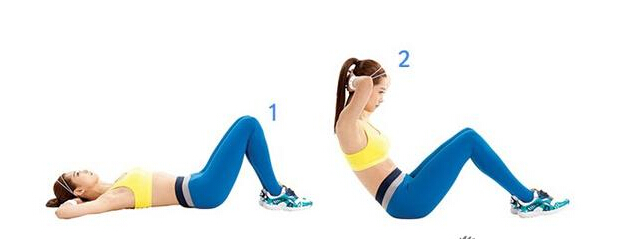

仰卧起坐标准测量方法
2016/02/02
测量帮助

仰卧起坐，一种锻炼身体的方式。仰卧，两腿并拢，两手上举，利用腹肌收缩，两臂向前摆动，迅速成坐姿，上体继续前屈，两手触脚面，低头；然后还原成坐姿, 如此连续进行。
1.逐渐增加仰卧起坐反复次数,对于一位刚开始以仰卧起坐来训练腹部肌肉的参与者而言，每次仰卧起坐的次数以不超过10个反覆为原则 (先训练您腹部肌肉的肌力) ，每完成一次的仰卧起坐后，应站起或躺下休息，让腹部肌肉能够放松10分钟以上。
2.慢慢进行仰卧起坐,主要是以腹部肌肉的耐力为训练目标，因此，只有慢慢进行仰卧起坐的运动方式，比较能够确实训练腹肌的耐力。
3.仰卧起坐的动作,人体上腹部的肌肉，主要有腹直肌、腹外斜肌与腹内斜肌。因此，如果仰卧起坐的动作，都是以上半身在矢状面 (双肩平行的起坐动作) 上的动作进行时，腹外斜肌与腹内斜肌的训练效果会受到明显的限制，只有增加身体纵轴 (右肩带向左腿与左肩带向右腿) 旋转的动作，才可以避免腹肌训练的不协调状态。